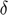
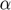
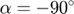
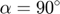
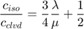
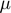

hybridmt
Perform refinement of seismic moment tensors using Hybrid Moment Tensor approach.
Contents
Syntax
hybridmt(Input) hybridmt(Input,'PropertyName',PropertyValue,...) Solution = hybridmt(Input, varargin)
Description
Use hybridmt to perform the refinement of seismic moment tensor solutions forming a tight cluster using Hybrid Moment Tensor technique. The MATLAB implementation of the Hybrid Moment Tensor technique is based on the work: Andersen, L. M. (2001), "A relative moment tensor inversion technique applied to seismicity induced by mining", PhD Thesis, Univ. of the Witwatersrand, Johannesburg.
hybridmt(Input) performs the refinement of seismic moment tensors provided in Input data (cell array or input file name in raw or 1D velocity model ASCII format) using the default parameters.
Solution = hybridmt(Input) performs the refinement of seismic moment tensors provided in Input data (cell array or input file name in raw or 1D velocity model format) using the default parameters. The refined seismic moment tensors are returned in Solution cell array.
Solution = hybridmt(Input,'PropertyName',PropertyValue,...) allows to specify additional options to control the routine execution.
Additional information
For an up-to-date information on software package, see the following website: http://www.induced.pl/hybridmt.
Parameters
CorrectStation - Allows to provide a constant multiplier factor to input amplitudes for particular station(s)
cell([]) (default) | {'stationname1',factor1,'stationname2',factor2,...}
Allows to provide constant multiplication factor to input seismic moments for a specific station or stations. This can be useful when one wants to correct the specific station for bad polarity or bad gain value. Also, this parameter is useful while performing the refinement of input seismic data using hybrid moment tensor inversion with updated gain values.
Display - Display progress of the algorithm execution
'on' (default) | 'off'
Displays progress window.
FigureFormat - Format of output figures
'PNG' (default) | | 'SVG' | 'PDF' | 'PS'
Defines default format of output figures (excluding snapshot figures)
IgnoreStation - Ignored station(s) list
{} (default) | cell array | string
Use this parameter to specify the list of stations that will be rejected from seismic moment tensor inversion. Single station can be specified as string. If multiple stations are meant to be rejected they must be provided as cell array of strings.
Iterations - Number of iteration for hybridMT inversion
40 (default) | scalar > 0
Number of iteration steps in hybrid moment tensor inversion. The inversion typically needs at least 10 iteriations to reduce the RMS error of seismic moment tensors to a reasonable level.
ProjectDir - Project directory name
'results' (default) | string (valid directory name)
Allows to specify the project directory where output files from hybrid moment tensor refinement will be stored.
Snapshots - Store beach ball snapshots
'off' (default) | 'on'
Determines whether at each inversion step the routine creates a set of figures containing graphical representation of the seismic moment tensor inversion (beach ball) for each event. The resulting figures are stored in subfolders of project directory. Turning this option on allows to trace the change in seismic moment tensors solutions with progressing iterations. Turning this option on significantly slows down the perfomance of the algorithm due to numerous pictures generated.
Solution - Seismic moment tensor type
'full' (default) | 'clvd' | 'dc'
Determines whether the seismic moment tensor refinement should be performed for calculated full, trace-null or double-couple moment tensors. By default, the full seismic moment tensor inversion is performed.
RatioLimit - Theoretical/Observed seismic moment ratio limit
10 (default) | floating-point value > 1
In every iteration, the ratios between theoretical and observed seismic moments are calculated for all stations and all seismic events that take part in hybrid moment tensor inversion. In the following, the median theoretical-to-observed seismic moment ratios are calculated for each station separately. This parameter allows to ignore events for which the ratio exceeds certain bounds according to the scheme: $
Weight - Correction weight in hybrid moment tensor inversion
0.1 (default) | 0.0 < floating point < 1.0
Weighting parameter
TestData - Input data test
'off' (default) | 'on'
This option forces program to perform only input data test.
VelocityModel - Input 1D velocity model
[] (default) | n-by-2 matrix
Allows to provide a 1D velocity model as n-by-2 matrix where first column corresponds to top of the layers (km) and second column reflects the widths of layers (km/s). When this parameter is specified it is assumed the input file is provided in 1D velocity model format.
Examples
Example 1
In this example we first generate an input data set of 50 focal mechanisms in fociMT raw format using auxilliary routine genmt_raw.m. The generated fault planes will have random fault orientations. In addition, these focal mechanism will have a certain (also random) amount of non-double-couple component controlled by tensile angle ALPHA parameter ranging from 0 degrees (pure shear) to 90 degrees (pure tensile) DC component, which is controlled by tensile angle ALPHA. The input file will be stored in input_synthetic.txt file.
n = 50; STRIKE = round(rand(1,n) * 359); DIP = round(rand(1,n) * 90); RAKE = round(rand(1,n) * 360 - 180); ALPHA = round(rand(1,n) * 40 - 20); genmt_raw(STRIKE,DIP,RAKE,ALPHA,'FileName','input_synthetic.txt','PicksLost',0.4,'StationBias',[5 0.2; 10 2; 15 1/3]);
In addition, we introduced some bias to synthetic dataset. First, we assumed that 40 percents of randomly selected stations will be in fact not picked successfully. Secondly, we introduced a PERSISTENT bias to amplitude readings at three stations: The amplitudes at fifth, tenth and fifteenth station will be multipled by factoes 0.2, 2 and 1/3, respectively.
Example 2
We generate a synthetic set of 50 focal mechanism using shear-tensile source model (Vavryčuk, 2001) where the source kinematics is described by four parameters: strike (), dip (), rake () of the fault plane and the tensile angle . The tensile angle describe the angle between the slip vector direction and the slip vector projected on the fault plane with , and  corresponding to the pure tensile closing, pure shear and pure tensile opening, respectively.
The fault plane parameters were randomly sampled assuming all possible focal mechanisms:
n = 50; STRIKE = round(rand(1,n) * 359); DIP = round(rand(1,n) * 90); RAKE = round(rand(1,n) * 360 - 180); ALPHA = round(rand(1,n) * 40 - 20);
The tensile angle was randomly selected between , which corresponds to the seismic moment tensors containing approximately between -20 to +20 percent of isotropic and compensated linear vector dipole components parts and up to 60 percent of the (remaining) double-couple component (the default Poisson’s ratio equal to 0.25 is used in the genmt_raw.m routine):
genmt_raw(STRIKE,DIP,RAKE,ALPHA,'FileName','d_synthetic.txt','PicksLost',0.4,'StationBias',[5 0.2; 10 2; 15 1/3]);
It is important to note that for the shear-tensile source model the following relation holds:

where and  are Lamé’s constants and and  are the percentages of ISO and CLVD components calculated according to Vavryčuk (2001). It is also worth to note that the ratio on the left hand side of equation must be always positive, i.e. the ISO and CLVD percentages must be of the same sign.
are the percentages of ISO and CLVD components calculated according to Vavryčuk (2001). It is also worth to note that the ratio on the left hand side of equation must be always positive, i.e. the ISO and CLVD percentages must be of the same sign.
We assumed the isotropic medium with constant P-wave velocity. For each synthetic fault plane, the expected P-wave amplitudes were calculated using radiation pattern formula (see description of rpgen.m) derived in (Ou, 2008; Kwiatek and Ben-Zion, 2013) at 24 stations that were perfectly covering the focal sphere. The initial synthetic catalog was biased. First, for all events we intentionally biased the recorded first P-wave amplitudes of three stations S05, S10 and S15 by introducing a constant multiplication factor of 5, 0.5 and 10, respectively using the StationBias property. The latter procedure can be perceived as introduction of a constant factor to the Green’s function observed at a certain station (e.g. site amplification or bad sensor gain value). Secondly, for each seismic event we randomly removed 40 percent of first P-wave amplitudes simulating lack of P phase arrivals on some stations using PickLost property. We assumed all generated earthquake formed a single cluster and we used the generated data to perform the moment tensor refinement using hybridMT algorithm.
In the following, we execute the hybrid moment tensor refinement of the synthetic data by executing the command:
%hybridmt('d_synthetic.txt','Snapshots','off','ProjectDir','synthetic');
The comparison of MTI results using initial and biased catalogs, as well as the Hybrid Moment Tensor results is presented in figure below. The source types of initial catalog on Hudson plot (left figure) are perfectly aligned as predicted from equation above. The introduction of persistent bias to amplitude readings from three stations S05, S10 and S15 resulted in scatter in estimated ISO, CLVD and DC components, as seen in the middle picture. However, the application of Hybrid Moment Tensor technique allowed to detect biased stations and suppress their effect resulting in improved quality of MT inversion, what is clearly seen while comparing the results of Hybrid Moment Tensor-refined data (right figure) with the biased catalogs.


The correction factors are nearly perfectly recovered as seen in the follwing figure. Also, during the course of optimization, the RMS errors of MTs were significantly reduced.


The Hybrid Moment Tensor technique is capable to detect the persistent bias introduced to recording station, either in form of station (e.g. wrong gain), site (amplification) or path effects (e.g. velocity or attenuation mismodelling). It is worth to note however, that it is not capable to account for wrong station polarity. However, during the course of Hybrid Moment Tensor refinement the developed software package provide statistical information on polarity match on each station by comparing the observed and predicted polarities. This allows to detect stations with wrong polarities, stop the Hybrid Moment Tensor refinement procedure, easily introduce the corrections to amplitude readings from "bad" stations and restart the refinement.
See also
focimt | readraw | readvel1d | genmt_raw.m | genmt_vel1d.m | rpgen
References
Andersen, L. M. (2001). A relative moment tensor inversion technique applied to seismicity induced by mining, Univ. of the Witwatersrand, Johannesburg.
Kwiatek, G., and Y. Ben-Zion (2013). Assessment of P and S wave energy radiated from very small shear-tensile seismic events in a deep South African mine, J. Geophys. Res. Solid Earth 118, no. 7, 3630–3641, doi 10.1002/jgrb.50274.
Ou, G. B. (2008). Seismological studies for tensile faults, Terr Atmos Ocean Sci 19, no. 5, 463–471, doi 10.3319/TAO.2008.19.5.463(T)1
Vavryčuk, V. (2001). Inversion for parameters of tensile earthquakes, J Geophys Res 106, no. B8, 16339–16355, doi 10.1029/2001JB000372.